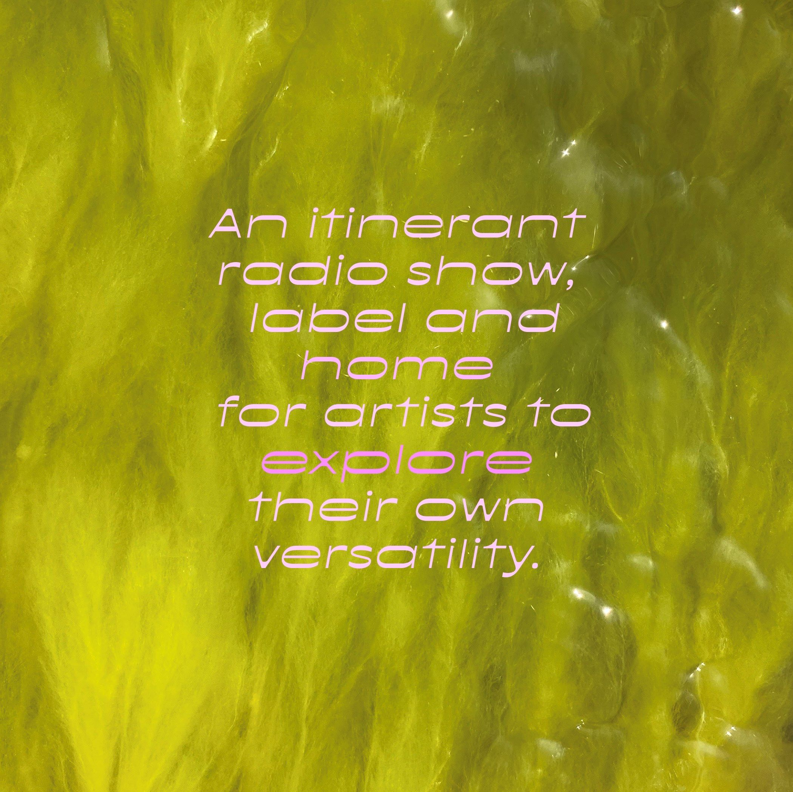
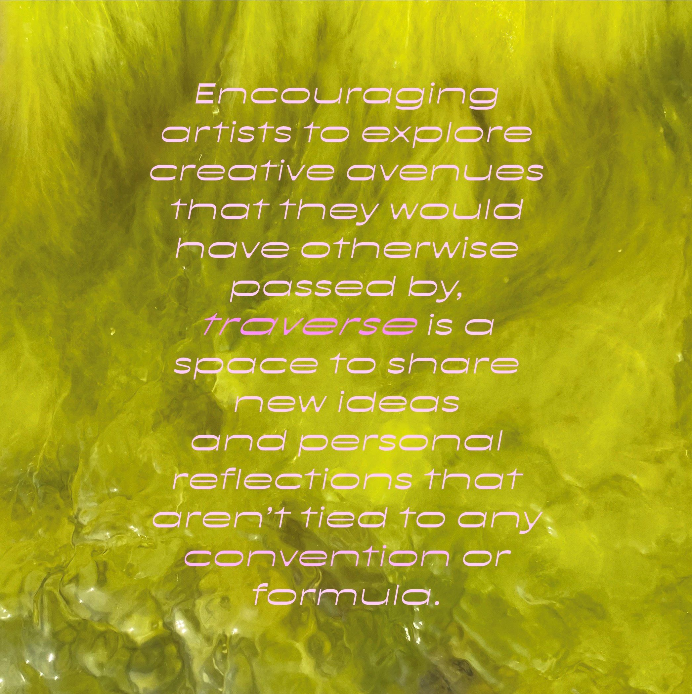
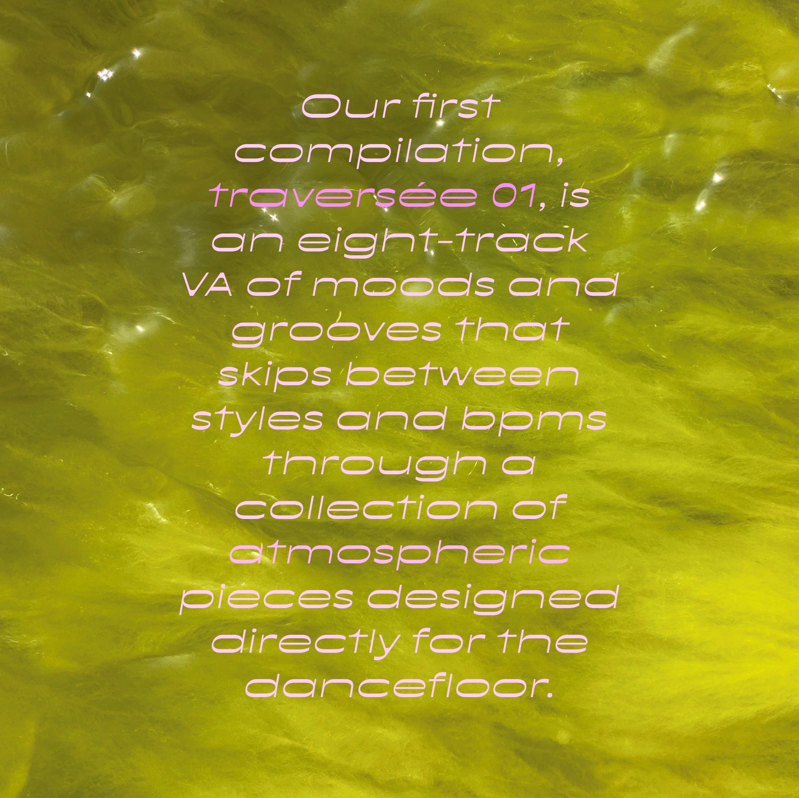

Originally created as an itinerant radio show traveling through different radio stations such as HOR, Rinse FR, Kiosk Radio, Operator and now having a residency at RRFM, traverse has recently expanded its activity with its first release “traversee 01”, compiling different artists from across the world tied by a common musical vision.
In conversation with Laura, the founder of traverse also known as Lolo Batten, she expands on the platform and the process around this first release.
Feature: traversée 01 by traverse
written by Lou Touyarou
“I started traverse to give a space for artists to explore their own creativity as DJs, go beyond their limits, and share something personal through music. This love for promoting and sharing music/artists that move me dates back from earlier though - before traverse, I was running an online magazine dedicated to electronic music for 6 years, which aimed at promoting artists as well.
When I started traverse, I knew it would grow with time into more than a radio show - the label is just an extension of the vision I try to share through traverse, and offers a wider space for artists to show their versatility as producers. It was in my head for a long time, I was just waiting for the right moment to get started.”
When I started traverse, I knew it would grow with time into more than a radio show - the label is just an extension of the vision I try to share through traverse, and offers a wider space for artists to show their versatility as producers. It was in my head for a long time, I was just waiting for the right moment to get started.”

In fact, this idea of versatility seems to be key in the platform’s vision and keeps coming back in the music that traverse represents, playing an important role in the global coherence of the project.
“I like how the general sound became coherent, even if it’s so diverse - the artists I invite are not sticking to one genre or atmosphere, and I think the coherence comes from this diversity of vibes, bpms and genres.”
“traverse is a space for artists to go beyond genres and explore their own creativity and versatility as artists. A space for them to challenge themselves - maybe by creating something more personal, maybe creating something that is out of their comfort zone.
Since the beginning I really wanted the artists to feel freedom in the process (DJ or production), rather than sticking to what they usually do - or what is expected from them. It is also a space for them to express themselves: each artist writes a few words about their track or mix to give it a more personal touch.”
La Dame “This track is inspired by hard-drum, minimal dubstep, and muted micro sounds to evoke a walk with dark accents but full of hope and curiosity.”
phil in a maze “It was recorded while in a fight with some serious writer's block which actually ended up being quite fruitful, making me approach the whole music-making process from a very different perspective than usual, and writing some of my most personal and honest pieces of music to date.”
“I like how the general sound became coherent, even if it’s so diverse - the artists I invite are not sticking to one genre or atmosphere, and I think the coherence comes from this diversity of vibes, bpms and genres.”
“traverse is a space for artists to go beyond genres and explore their own creativity and versatility as artists. A space for them to challenge themselves - maybe by creating something more personal, maybe creating something that is out of their comfort zone.
Since the beginning I really wanted the artists to feel freedom in the process (DJ or production), rather than sticking to what they usually do - or what is expected from them. It is also a space for them to express themselves: each artist writes a few words about their track or mix to give it a more personal touch.”
La Dame “This track is inspired by hard-drum, minimal dubstep, and muted micro sounds to evoke a walk with dark accents but full of hope and curiosity.”
phil in a maze “It was recorded while in a fight with some serious writer's block which actually ended up being quite fruitful, making me approach the whole music-making process from a very different perspective than usual, and writing some of my most personal and honest pieces of music to date.”

The identity of the platform shines through all the way to the creation process of the tracks themselves, with complete freedom given to the artists and no expectations on the label’s side.
“With this first compilation and release, “traversée 01”, I wanted the vision behind traverse to stand out. I gave carte blanche to all the artists to come up with whatever they felt like producing. The only guideline was for them to explore their own creativity and versatility, and be as authentic as they could in the process. To be in line with the concept, I released the first track I received from each artist, as it is their own interpretation of traverse in electronic music. I love how they are all so different but at the same time so connected.”
Despite the different musical backgrounds each artist is bringing, the choice of artists featured in the compilation is the result of a carefully curated selection and have been close to traverse and its sound for a long time.
“I’ve been following and in touch with most of the artists of the comp for a long time, and playing their tracks very often as well. Nog4yra and Oyubi were more recent discoveries, and really fell in love with their musical identity. It felt like an honor to collaborate with these 9 artists that have been inspiring me for such a long time!”
“With this first compilation and release, “traversée 01”, I wanted the vision behind traverse to stand out. I gave carte blanche to all the artists to come up with whatever they felt like producing. The only guideline was for them to explore their own creativity and versatility, and be as authentic as they could in the process. To be in line with the concept, I released the first track I received from each artist, as it is their own interpretation of traverse in electronic music. I love how they are all so different but at the same time so connected.”
Despite the different musical backgrounds each artist is bringing, the choice of artists featured in the compilation is the result of a carefully curated selection and have been close to traverse and its sound for a long time.
“I’ve been following and in touch with most of the artists of the comp for a long time, and playing their tracks very often as well. Nog4yra and Oyubi were more recent discoveries, and really fell in love with their musical identity. It felt like an honor to collaborate with these 9 artists that have been inspiring me for such a long time!”

Not only the platform is diversifying its outputs with this new compilation, it is also expanding its sound through an evolving visual identity “We are developing a more organic identity around traverse as we want a clearer identity in line with the concept. traverse represents the idea of crossing, of exploring, and we link it to an organic and abstract feel - something we can all understand in a different way, in our own way. That’s the beauty of music, right?”
Based in Amsterdam, the Dutch musical scene has also been very present on the platform, making frequent appearances on Dutch online radio stations as well as featuring a considerable amount of Amsterdam-based DJs.
“As I am based in Amsterdam it is kind of linked to this city, but to be honest I think of traverse as an international and global platform. Since the beginning, and even more now with the label, I find it sooo important and interesting to promote music and artists from everywhere around the world - in the first compilation the artists are from Mexico, Brazil, France, Italy, Czech Republic and Japan. However being based in Amsterdam is allowing me to discover a lot of new talents from here, DJs and producers, which makes the Dutch scene quite present on the radio shows.”
The good news is, this is only the beginning for traverse as more releases are planned for 2023 so stay sharp!
“3 releases until the end of the year - two albums from great producers and the second volume of traversée. Some parties might come along the way as well… Working on all of this!”
“As I am based in Amsterdam it is kind of linked to this city, but to be honest I think of traverse as an international and global platform. Since the beginning, and even more now with the label, I find it sooo important and interesting to promote music and artists from everywhere around the world - in the first compilation the artists are from Mexico, Brazil, France, Italy, Czech Republic and Japan. However being based in Amsterdam is allowing me to discover a lot of new talents from here, DJs and producers, which makes the Dutch scene quite present on the radio shows.”
The good news is, this is only the beginning for traverse as more releases are planned for 2023 so stay sharp!
“3 releases until the end of the year - two albums from great producers and the second volume of traversée. Some parties might come along the way as well… Working on all of this!”